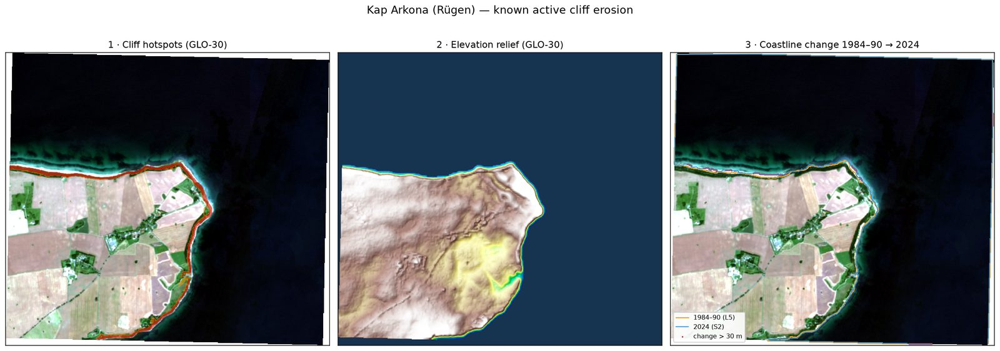
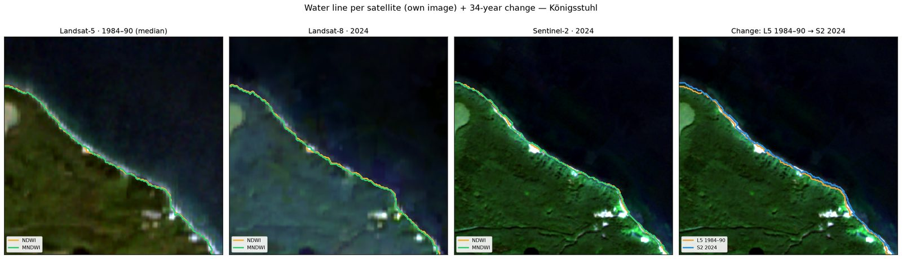
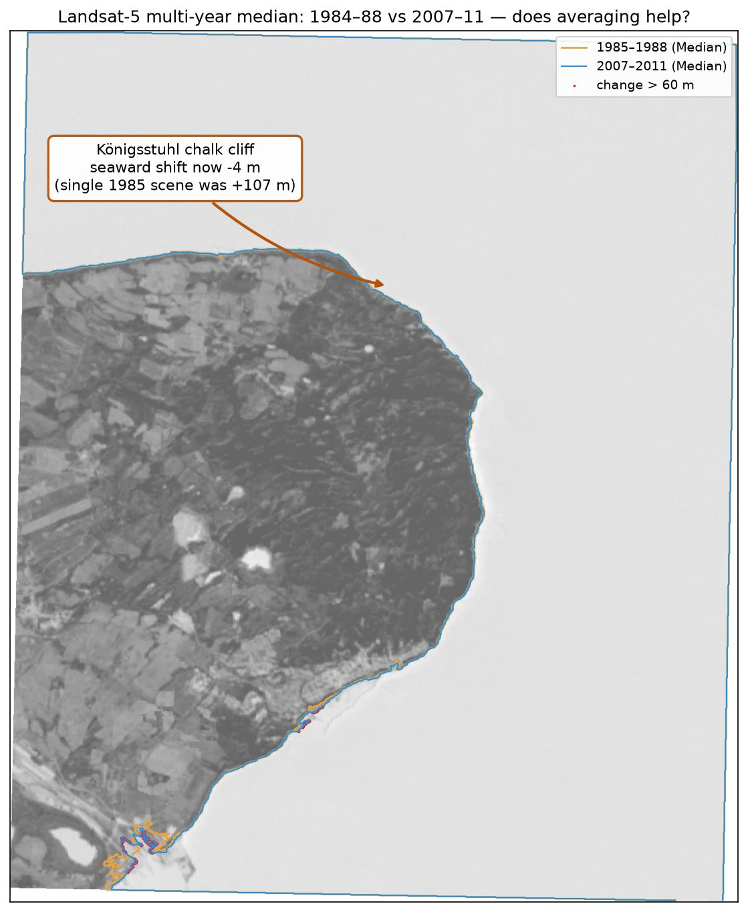
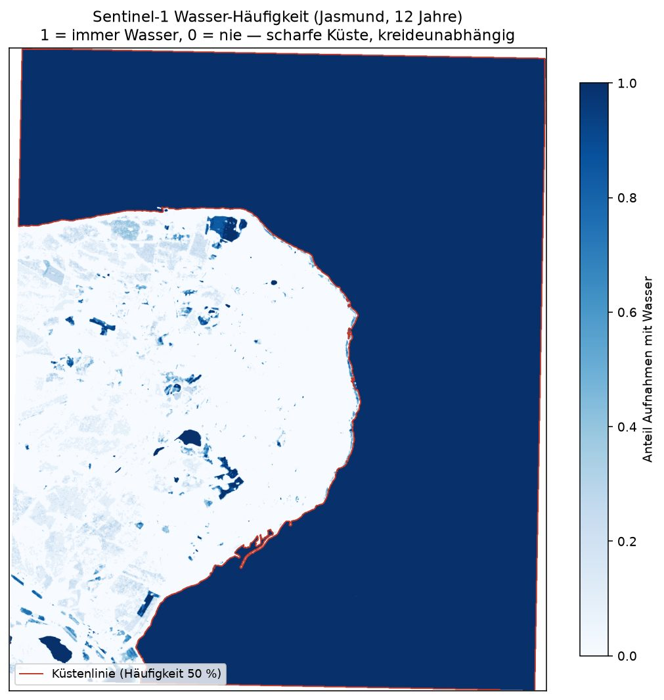

Field notes · Coastal change
Measuring coastal cliff erosion from free satellite data
How we locate cliffs, read the coastline, and why the precise numbers ultimately need LiDAR — with worked examples from the chalk and till cliffs of Rügen.
At AutoCoast we track how the North Sea and Baltic coasts have changed over the last four decades — and where they are heading. Cliffs are one of the hardest cases: they are narrow, steep, and change slowly. This note walks through a small, reproducible pipeline built entirely on free satellite and elevation data, and is honest about where free data stops being enough.
Why not radar?
The obvious idea is Sentinel-1 radar interferometry (InSAR). We tried it and stepped back — on physics, not convenience. InSAR measures movement (millimetres of ground shift), not geometry (how much rock is gone). Worse, a steep cliff face is the pathological case for side-looking radar: it produces layover and shadow, and an actual collapse destroys the radar coherence the method depends on. So we build on elevation models and optical imagery instead.
Step 1 — Where are the cliffs?
A cliff is simply a steep slope right next to the sea. That is enough to find them automatically in a free 30 m global elevation model (Copernicus GLO-30): compute the slope, keep pixels that are steep, above sea level, and within a couple of hundred metres of the water. No training data needed.

Step 2 — Reading the water line
To follow the coast over time we extract the land–water boundary from each image. The classic index, NDWI, is easily fooled here: bright, chalky, turbid water near a chalk cliff gets misread as land. Indices that use the short-wave infrared (MNDWI, AWEI) are far more robust, because water absorbs SWIR whatever its colour. Radar (Sentinel-1) ignores colour entirely, and a deep-learning classifier (Google Dynamic World) adds another independent view.

Averaging beats a single scene
Old Landsat scenes are hazy. A single 1985 image suggested the Königsstuhl coast had advanced ~100 m seaward — physically impossible for an eroding chalk cliff. Comparing multi-year medians instead (1984–88 vs 2007–11) collapses that artefact to about −4 m. It was noise, not change.

A robust base layer: water frequency
The most reliable coastline comes from asking, over many images, how often each pixel is water. Doing this on 12 years of Sentinel-1 radar averages out wind, clouds and chalk artefacts, and — because radar is colour-blind — there is no bright-chalk bulge.

The honest limit — and where LiDAR comes in
Across two well-known German cliff sites — Jasmund and Kap Arkona — the story is the same: the coastline moves only about 0.3 m per year, roughly 10 m over three decades. That is smaller than one Landsat or Sentinel-2 pixel. Free optical data is excellent for finding where cliffs are and flagging large or built-up change, but it cannot resolve the slow, precise retreat rate.
For the actual geometry — how much material fell, how much volume was lost — we difference two high-resolution LiDAR elevation models (1 m) with careful co-registration and a detection limit. On a controlled test with known ground truth, the pipeline recovered a buried crater's volume to 100 %.
In one line
Free optical + radar tells you where and roughly how fast; matched 1 m LiDAR differencing tells you exactly how much. Together they scale from the whole coast down to a single cliff.
Takeaways
- Cliffs can be located automatically from a free global elevation model — no labels needed.
- Use an SWIR index (MNDWI/AWEI) or radar for the water line; plain NDWI fails on bright chalk water.
- Always average over years — single old scenes fake tens of metres of change.
- Slow cliff retreat is sub-pixel for 10–30 m optical; precise volumes need 1 m LiDAR differencing.
- next a fast-eroding demonstrator and pan-Baltic / North-Sea national-LiDAR harmonisation.
Part of AutoCoast — coastal change detection with remote sensing and deep learning at Helmholtz-Zentrum Hereon. Data: Copernicus GLO-30, Sentinel-1/2, Landsat 5/8, Dynamic World, DGM1 Mecklenburg-Vorpommern (© GeoBasis-DE/M-V, CC BY). Questions & suggestions: david.pogorzelski@hereon.de.